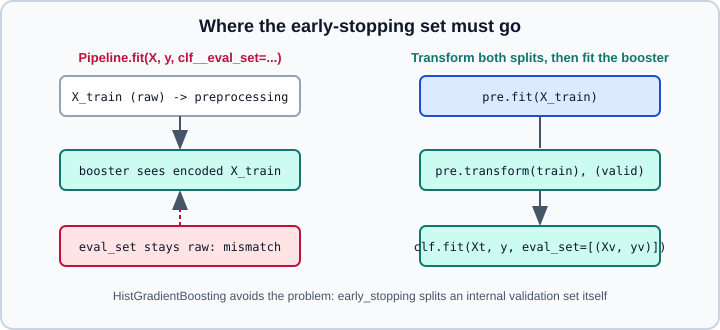

HistGradientBoosting vs XGBoost, LightGBM & CatBoost
|
This content was generated with the assistance of AI and should be verified against the official documentation before being relied on in production. |
scikit-learn has its own gradient-boosting estimators, HistGradientBoostingClassifier and HistGradientBoostingRegressor, and three external libraries (XGBoost, LightGBM and CatBoost) provide scikit-learn-compatible estimators of the same family. This page is about using them together with scikit-learn: pipelines, cross-validation, search, early stopping, categorical features and the places where the external estimators do not behave like native ones. How boosting works, how the four libraries differ internally (tree growth, categorical algorithms, GPU) and the evidence about tabular data are in Tabular Data: Gradient Boosting vs Deep Learning and are not repeated here.
Examples were run on Python 3.13 with scikit-learn 1.9.1, XGBoost 3.4.1, LightGBM 4.7.0 and CatBoost 1.2.10 on 2026-11-01.
The short comparison
| Aspect | HistGradientBoosting* |
XGBoost | LightGBM | CatBoost |
|---|---|---|---|---|
Install |
Part of scikit-learn |
|
|
|
Estimators |
|
|
|
|
Categorical input |
|
|
|
|
Early stopping |
|
|
|
|
GPU |
No |
Yes |
Yes |
Yes |
Extra dependency |
None |
Yes |
Yes (plus an OpenMP runtime) |
Yes |
The table keeps only what matters for integration. The headline guidance is the same as in the tabular page: the four are usually within a small margin of each other when tuned, so pick by constraint. Stay with HistGradientBoosting when you cannot or do not want another dependency, when you want everything (early stopping, categorical handling, cloning, metadata routing) to follow scikit-learn rules, or when the data fits comfortably on a CPU. Reach for XGBoost or LightGBM when you need a GPU, distributed training or very large data, and CatBoost when high-cardinality categorical columns are the main difficulty.
Drop-in comparison with cross-validation
All four estimators implement fit, predict, predict_proba, get_params and set_params, so any scikit-learn tool accepts them. A benchmark on one dataset, with identical folds and metric, is therefore a loop (see Cross-Validation and Metrics & Scoring):
from sklearn.datasets import load_breast_cancer
from sklearn.ensemble import HistGradientBoostingClassifier
from sklearn.model_selection import cross_val_score
from xgboost import XGBClassifier
from lightgbm import LGBMClassifier
from catboost import CatBoostClassifier
X, y = load_breast_cancer(return_X_y=True)
models = {
"HistGradientBoosting": HistGradientBoostingClassifier(random_state=0),
"XGBoost": XGBClassifier(tree_method="hist", n_estimators=200,
learning_rate=0.1, random_state=0),
"LightGBM": LGBMClassifier(n_estimators=200, learning_rate=0.1,
random_state=0, verbose=-1),
"CatBoost": CatBoostClassifier(iterations=200, learning_rate=0.1,
random_seed=0, verbose=0),
}
for name, model in models.items():
scores = cross_val_score(model, X, y, cv=5, scoring="roc_auc")
print(f"{name:22s} {scores.mean():.3f} +/- {scores.std():.3f}")Output:
HistGradientBoosting 0.993 +/- 0.004
XGBoost 0.994 +/- 0.005
LightGBM 0.994 +/- 0.004
CatBoost 0.994 +/- 0.004On this small dataset the four are within one standard deviation of each other, which is the typical picture.
Note the difference in names: CatBoost accepts scikit-learn-style aliases (n_estimators, max_depth, random_state) for its own iterations, depth and random_seed. Compare libraries at the same effective complexity (number of trees, learning rate, tree depth or leaves); equal defaults are not equal models, because for example LightGBM’s num_leaves default is 31 while the depth of CatBoost’s symmetric trees is 6.
Pipelines, clone and search
External boosters fit into a Pipeline like any estimator, and their hyperparameters are searched with the usual double-underscore names, GridSearchCV or RandomizedSearchCV. Trees do not need scaling, so the preprocessing is usually imputation (optional, as all four handle missing values natively) and categorical encoding with a ColumnTransformer.
import numpy as np
import pandas as pd
from sklearn.compose import ColumnTransformer
from sklearn.datasets import make_classification
from sklearn.model_selection import GridSearchCV
from sklearn.pipeline import Pipeline
from sklearn.preprocessing import OrdinalEncoder
from xgboost import XGBClassifier
X, y = make_classification(n_samples=1000, n_features=6, random_state=0)
X = pd.DataFrame(X, columns=[f"f{i}" for i in range(6)])
X["city"] = np.random.RandomState(0).choice(["a", "b", "c"], size=len(X))
pre = ColumnTransformer(
[("cat", OrdinalEncoder(handle_unknown="use_encoded_value", unknown_value=np.nan),
["city"])],
remainder="passthrough",
verbose_feature_names_out=False,
)
pipe = Pipeline([
("pre", pre),
("clf", XGBClassifier(tree_method="hist", n_estimators=100)),
])
grid = GridSearchCV(
pipe,
{"clf__max_depth": [2, 4], "clf__learning_rate": [0.05, 0.2]},
cv=3, scoring="roc_auc",
)
grid.fit(X, y)
print(grid.best_params_, grid.best_score_)This printed {'clf__learning_rate': 0.05, 'clf__max_depth': 2} 0.9788....
A very common mistake is encoding categories with OneHotEncoder before a boosted-tree model with many categories: it multiplies the columns and weakens the splits. An OrdinalEncoder (integer codes) works for XGBoost and LightGBM when the codes are treated as numbers, which loses the category identity; the native categorical support of each library is better, as in the next section. See Encoding Categorical Features for the encoders, and set_output for passing a DataFrame between steps.
Cloning is the mechanism behind every search and cross-validation (see get_params, set_params and clone): it rebuilds the estimator from get_params() and checks that the constructor stores each parameter unchanged. The three libraries pass for ordinary hyperparameters, but CatBoost’s cat_features does not, as described below.
Early stopping and eval_set
HistGradientBoosting* estimators early-stop with early_stopping (switched on automatically for more than 10,000 samples when left at "auto"), validation_fraction and n_iter_no_change; the validation split is made inside fit, so it composes with Pipeline and cross-validation without extra work. The external libraries instead rely on an explicit validation set that you pass to fit:
-
XGBoost:
early_stopping_roundsin the constructor andeval_set=[(X_va, y_va)]infit. The documentation stresses that XGBoost does not split data itself, so you must split first. -
LightGBM: the callback
lightgbm.early_stopping(stopping_rounds)infit(callbacks=[...]), plus an evaluation set. Since LightGBM 4.7.0 theeval_setargument offitstill works but emitsLGBMDeprecationWarning: The argument 'eval_set' is deprecated, use 'eval_X' and 'eval_y' instead.; passeval_X=(X_va,), eval_y=(y_va,)instead. -
CatBoost:
early_stopping_roundsandeval_setinfit.
The trap inside a Pipeline is that the pipeline transforms the training data for the final step but not the evaluation set that you pass as a fit parameter to it, so the booster would compare features in two different representations.

from sklearn.model_selection import train_test_split
from xgboost import XGBClassifier
# `pre`, `X`, `y` as in the previous listing
X_tr, X_va, y_tr, y_va = train_test_split(X, y, test_size=0.2, random_state=0, stratify=y)
pre.fit(X_tr) # fit preprocessing on the training split only
clf = XGBClassifier(
tree_method="hist", n_estimators=1000, learning_rate=0.1,
early_stopping_rounds=20, eval_metric="logloss",
)
clf.fit(pre.transform(X_tr), y_tr,
eval_set=[(pre.transform(X_va), y_va)], verbose=False)
print("best iteration:", clf.best_iteration)
# Final model on all the data with a fixed number of trees and no early stopping
final = XGBClassifier(
tree_method="hist", learning_rate=0.1,
n_estimators=int(clf.best_iteration * 1.1) + 1, eval_metric="logloss",
)
final.fit(pre.fit_transform(X), y)On this data early stopping chose best iteration: 38.
Three consequences follow:
-
Cross-validation with early stopping.
cross_val_scoreandGridSearchCVdo not know abouteval_set. The usual solutions are to useHistGradientBoosting(internal split), to write the fold loop yourself (scikit-learn splitters,fitwith the fold’s validation data), or to search with a fixedn_estimatorsand apply early stopping only in a separate step. An XGBoost estimator built withearly_stopping_roundsthat receives no evaluation set refuses to fit withValueError: Must have at least 1 validation dataset for early stopping., so it cannot go into a search as it is (a refit step has no validation data either). -
Refit. After finding the best number of trees on a validation split, refit with that number (a little more, because there is more data) and without early stopping, as the last lines of the listing do. This is also how a final model is built after a search.
-
Leakage. The validation set used for early stopping has influenced the model, so it cannot be the test set (see Common Pitfalls: Leakage and Randomness).
Categorical features
Each library needs a different way to receive categories, and the scikit-learn pipeline must provide it in that form.
-
HistGradientBoosting: pass a DataFrame with
categorydtype andcategorical_features="from_dtype", or give indices, names or a mask. Up to 255 categories per feature. -
XGBoost:
categorydtype withenable_categorical=True. -
LightGBM:
categorydtype columns are detected bycategorical_feature="auto"; otherwise pass names or indices. -
CatBoost:
cat_featureswith names or indices; the training data may contain strings. To use names,Xmust be a DataFrame or a CatBoostPool.
The listing below keeps categories as pandas category dtype for HistGradientBoosting; CatBoost, including a limitation of cloning, follows in the next section.
import numpy as np
import pandas as pd
from sklearn.datasets import make_classification
from sklearn.ensemble import HistGradientBoostingClassifier
from sklearn.model_selection import cross_val_score
Xc, yc = make_classification(n_samples=600, n_features=5, random_state=0)
df = pd.DataFrame(Xc, columns=[f"f{i}" for i in range(5)])
df["city"] = np.random.RandomState(0).choice(["a", "b", "c"], size=len(df))
hgb = HistGradientBoostingClassifier(categorical_features="from_dtype", random_state=0)
df_cat = df.astype({"city": "category"})
print(cross_val_score(hgb, df_cat, yc, cv=3, scoring="roc_auc"))This printed [0.9843 0.99419942 0.98739874].
The CatBoost clone problem
A CatBoostClassifier created with cat_features=["city"] (or with a list of integer indices) cannot be used in cross_val_score or any other clone-based tool: with CatBoost 1.2.10 and scikit-learn 1.9.1, clone raises RuntimeError: Cannot clone object CatBoostClassifier(cat_features=['city'], ...), as the constructor either does not set or modifies parameter cat_features. The same estimator without cat_features clones without error. The cause is that the list returned by get_params() is not the same object that was passed in, and clone checks identity. A workable pattern is to leave cat_features out of the constructor and give it as a fit parameter, which cross_val_score forwards through its params argument (called fit_params before scikit-learn 1.4):
from catboost import CatBoostClassifier
from sklearn.model_selection import cross_val_score
# `df` and `yc` as in the previous listing
cb = CatBoostClassifier(iterations=50, verbose=0, random_seed=0)
scores = cross_val_score(cb, df, yc, cv=3, scoring="roc_auc",
params={"cat_features": ["city"]})
print(scores)This printed [0.9887 0.989999 0.98239824].
In a Pipeline the same parameter is addressed as clf__cat_features, and it must refer to column names or indices of the data the booster sees, after any preprocessing step; if a ColumnTransformer reorders or drops columns, an index list silently points at the wrong columns. Prefer names with set_output(transform="pandas") (see set_output), or let CatBoost see the DataFrame directly without a transformer in front.
Parallelism
Each of these libraries has its own thread pool (n_jobs for the scikit-learn wrappers of XGBoost and LightGBM, thread_count for CatBoost), independent of joblib. Combining GridSearchCV(n_jobs=-1) with a booster that also uses every core oversubscribes the machine; set the outer parallelism to the number of folds and candidates you can afford and give each booster n_jobs=1, or the reverse. HistGradientBoosting uses OpenMP threads controlled by OMP_NUM_THREADS and threadpoolctl (see Performance and Parallelism). For large searches, see Hyperparameter Tuning at Scale. The OpenMP runtime is a real portability point: on macOS the XGBoost and LightGBM wheels do not bundle it, and without libomp (for example from Homebrew) importing them fails with Library not loaded: @rpath/libomp.dylib.
Importance, calibration and persistence
-
Feature importance: the built-in
feature_importances_of XGBoost, LightGBM and CatBoost use library-specific definitions (gain, split count and so on) and are biased toward high-cardinality features.HistGradientBoostinghas none; use permutation importance and partial dependence, which work with all four, or SHAP (Interpretability & Explainability). -
Probabilities from boosted trees are often poorly calibrated; see Probability Calibration and Tuning the Decision Threshold.
-
Persistence: scikit-learn objects are saved as in Model Persistence and Security. The external libraries also have native model formats (for example XGBoost’s JSON or UBJSON files, LightGBM’s text file, CatBoost’s
.cbm), which are safer to load across versions than a pickle. A fitted pipeline can be exported to ONNX only if a converter exists for each step; see Exporting Pipelines to ONNX and ONNX & Model Interoperability. -
Stacking and voting accept the boosters as base estimators (Voting, Stacking & Multiclass).
Version compatibility
The estimators rely on scikit-learn’s private-ish conventions, so a new scikit-learn release can break an old booster release and vice versa. For example, scikit-learn 1.6 reworked estimator tags around __sklearn_tags__, and third-party estimators had to adapt their releases to it. The robust approach: pin scikit-learn and each library in the same lockfile, upgrade them together and run your test suite and a tiny cross_val_score smoke test. See What’s New in scikit-learn 1.6 to 1.9 for the changes on the scikit-learn side.
Pitfalls
-
Early stopping on the test set, or on the same fold that is then scored.
-
Passing a raw
eval_setto the last step of aPipeline. -
One-hot encoding high-cardinality categories before a tree model, instead of using native categorical support.
-
cat_featuresin the CatBoost constructor combined withclone-based tools (see above). -
Oversubscribed threads from nested parallelism.
-
Comparing libraries at default settings and calling the result a benchmark.
-
Mixing pickles across library versions.